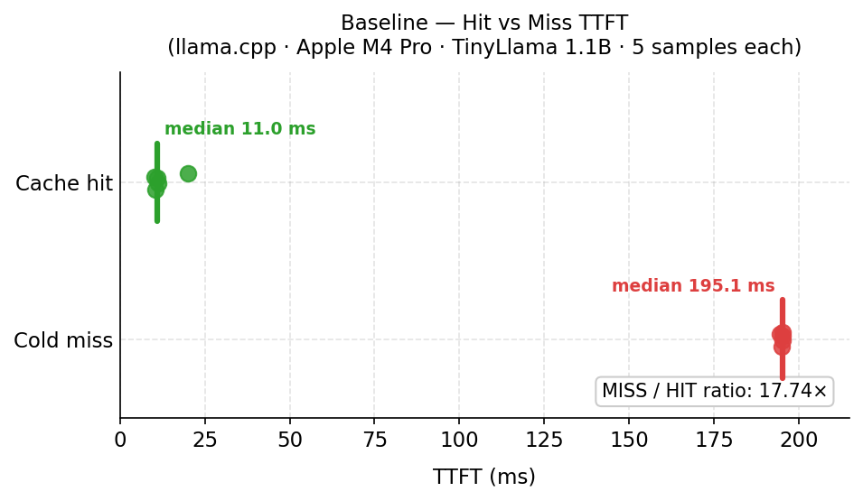
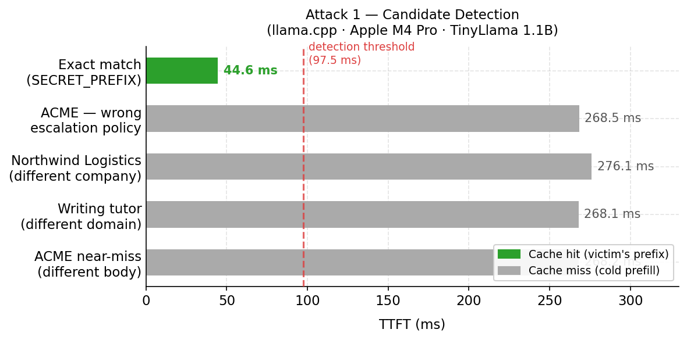
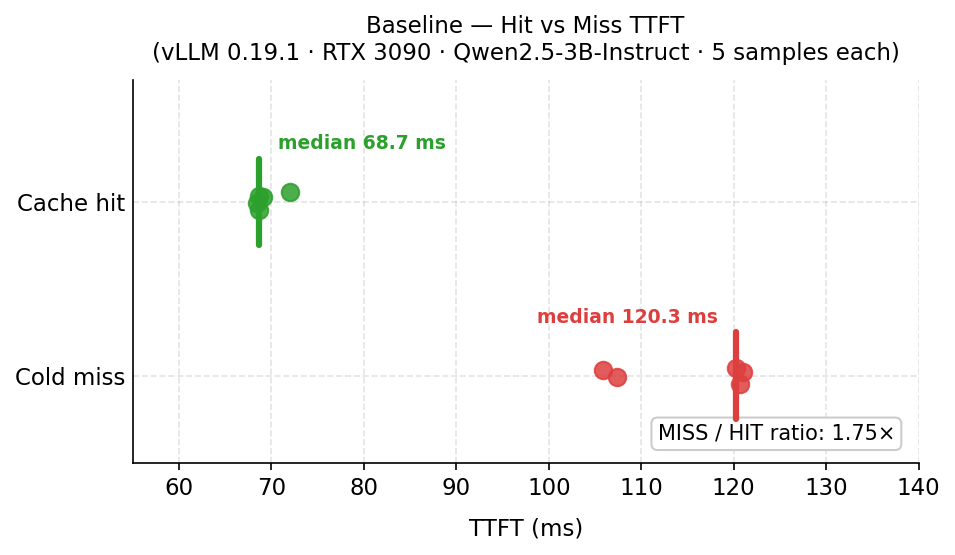
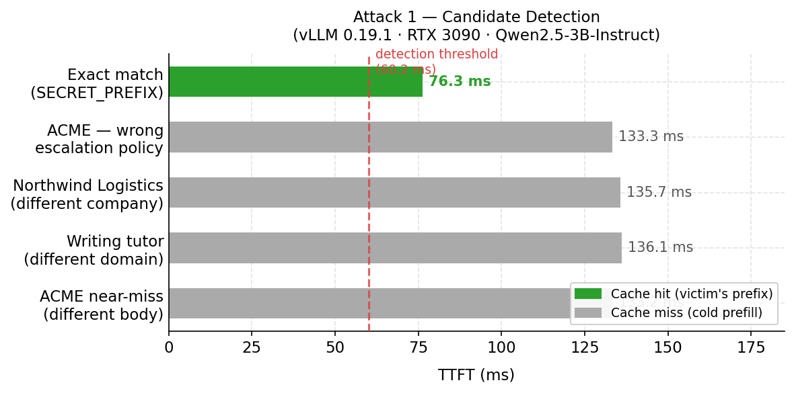

KV Cache Timing Side-Channel in Multi-Tenant LLMs
I built a small tool to test whether a managed inference provider’s prefix cache leaks timing information across tenant boundaries. Here’s what I found, how to run the same test yourself, and what providers should do about it.
This post covers the timing side-channel — a known attack class I’m adding a concrete PoC and DIY testing guide to. My next post covers a novel application of the same shared-cache vulnerability in a DoS attack.
TL;DR
Modern LLM inference servers cache the KV tensors produced during prompt prefill and reuse them when a later request shares a prefix. Cache hits can be 10–40× faster than cold prefill — a legitimate and widely deployed optimization. If the cache is shared across tenants without per-tenant key scoping, it becomes a cross-tenant information channel.
The timing side-channel works a bit like a chosen-plaintext attack in classical crypto. Recovering a system prompt from scratch is infeasible: the token-space is astronomical. But an attacker with a reasonable hypothesis — drawn from a competitor’s public product, a job posting, a leaked doc — needs only to confirm it. The shared cache becomes a binary oracle: submit the candidate, observe time-to-first-token (TTFT), and the cache tells you whether you are right. On a local llama.cpp setup I measured a 17.8× hit/miss ratio; the correct candidate ranked first in tens of requests total.
The fix — tenant-scoped cache keys — is not deployed by default in most stacks. This post is about why that matters and how to check whether your provider has it.
Get the code: PoC scripts live in my repo. See Testing your provider for how to run them.
1. Prior art
This attack class is not new; the academic literature here is solid:
PROMPTPEEK (NDSS 2025, Wu et al.) is the most directly relevant prior work. It demonstrates a complete prompt recovery pipeline — not just hypothesis confirmation — using a local LLM as an inference oracle to refine partial-match candidates. It targets multi-tenant SaaS LLM deployments, achieves ~99% prompt recovery accuracy, and works against vLLM and SGLang.
InputSnatch (Zheng et al., arXiv:2411.18191, 2024) demonstrates timing side-channel attacks against prefix caching in vLLM and SGLang, including token-by-token prompt reconstruction in chatbot scenarios. This is the canonical academic reference for the timing oracle in a single-node scope.
CPU cache side-channels (Flush+Reload, Prime+Probe, etc.) from the 2010s provide the conceptual template. The LLM case is mechanically different but shares the structure: a shared microarchitectural resource, timing as the observation channel, tenant isolation as the missing primitive.
This post adds a concrete, runnable PoC against open-source inference software, empirical measurements on both consumer CPU hardware and a GPU, and a provider testing guide you can run against a real managed API.
2. Background: prefix caching is standard
Every production inference server does prefix caching. The reasoning: prefill is quadratic-ish in prompt length, decode is roughly linear in output length, and most production workloads have long system prompts that are identical across requests. Caching the KV tensors for the shared prefix lets each subsequent request skip straight to decoding the user-specific suffix.
Concrete implementations:
- vLLM —
--enable-prefix-caching(on by default in recent versions). Block-granular at 16 tokens. Keyed by token hash. Optional per-tenant isolation via a cache salt; see Section 8.1. - SGLang — RadixAttention. Tree-structured, automatic.
- llama.cpp —
--cache-reuse N. Reuses KV when ≥N prefix tokens match something in cache. - TensorRT-LLM — KV cache reuse via
kvCacheConfig.enableBlockReuse. - LMCache — cluster-level extension turning per-node caches into a shared pool across nodes.
All of the above, in their default configurations, key the cache only by the token sequence. If two tenants submit requests that share a prefix, they hit the same cache entry. The cache does not know, or care, which tenant put the entry there.
That property is desirable for batched inference inside a single tenant. It is a security gap when the same cache serves multiple distinct trust domains.
3. Threat model
flowchart LR
subgraph Tenants["Tenants (isolated)"]
direction TB
V["Victim Pod"]
A["Attacker Pod"]
V ~~~ A
end
subgraph Cluster["Shared Inference Cluster"]
direction TB
S["Inference Server"]
K[("Shared KV Cache")]
S <--> K
end
V <--> S
A <--> S
System. A multi-tenant inference service. Each tenant has API access and submits standard completion requests. Tenants may share a node, or sit on different nodes behind a cache-aware router. TTFT is observable to the tenant — either via streaming response, or by timing any request with max_tokens=1.
Attacker capability. One valid API key. No privileged access. No ability to inspect server state. Ability to time HTTP responses at millisecond resolution — trivially available from any HTTP client.
Attacker goal. Confirm or recover another tenant’s system prompt or shared context. System prompts frequently contain business logic and tenant-specific instructions, embedded credentials or internal URLs (a common deployment mistake), references to internal architecture, and in RAG setups verbatim passages from private documents.
Out of scope. Attacks requiring host access (kernel exploits, firmware, physical fabric taps). Attacks against model weights. Cache-based availability and cost attacks are covered in the companion post.
4. The attack, mechanically
The attacker:
- Constructs a candidate prefix — a hypothesis about another tenant’s system prompt. Sources: the victim’s public product, job postings, leaked docs, known templates.
- Appends a unique suffix (to avoid matching the attacker’s own prior probes).
- Submits and records TTFT.
- Compares against a pre-established baseline: is this TTFT in the cache-hit band, or the miss band?
A result in the hit band means the candidate matches something cached by another tenant. Full prompt recovery — binary search, token-by-token enumeration, local-LLM-guided refinement — is out of scope here; PROMPTPEEK covers that end-to-end. This post focuses on a prerequisite question: is the environment vulnerable to cross-tenant cache attacks in the first place? If the timing signal is absent, none of the more sophisticated attacks are viable.
5. Proof of concept
I ran this in two environments: first on my MacBook Pro (Apple M4 Pro, llama.cpp with Metal acceleration) to establish the baseline signal locally without any cloud spend, then on a rented RTX 3090 GPU pod running vLLM to confirm the attack holds on the inference stack that managed providers actually use. Both show the same result — one probe, correct identification — at different absolute latency scales.
Setup:
llama-serverfrom llama.cpp, release build with Metal acceleration- Model: TinyLlama 1.1B (GGUF, ~670 MB)
- Hardware: Apple M4 Pro, 24 GB unified memory
- Server flags:
-c 4096 --cache-reuse 16 -ngl 99 --port 8000
Two client processes (“tenants”):
- Victim (
victim.py): loops every ~10 seconds, sendsSECRET_PREFIX + <random user query>. Usesmax_tokens=1for measurement convenience — a real victim generates full responses, but the cache behavior is the same: the prefix is cached after prefill, before any output is produced.SECRET_PREFIXis a 743-token system prompt — realistic for a customer-support or internal tooling bot. - Attacker (
attacker.py): runs a baseline to characterize hit/miss TTFT distributions, then submits five candidate prefixes.
The five candidates:
| # | Candidate | Relationship to secret |
|---|---|---|
| 0 | Same company name, different prompt body | Near-miss |
| 1 | Same company, wrong escalation policy | Shallow partial match |
| 2 | SECRET_PREFIX |
Exact match |
| 3 | Different company name, similar structure | Unrelated |
| 4 | Entirely different domain | Unrelated |
All candidates padded to approximately the same token count as SECRET_PREFIX (~743 tokens). Why this matters is covered in Section 6.
Baseline (5 samples each):

| Condition | Median TTFT |
|---|---|
| Cold miss (unique UUID prefix, never cached) | 195 ms |
| Warm hit (prefix primed, then measured) | 11 ms |
| Ratio | 17.8× |
The 17.8× ratio gives a detection threshold of ~97 ms (half the miss median). Any probe below that is, with high confidence, a cache hit.
Detection (1 probe per candidate, padded to ~743–765 tokens):

| Candidate | Raw tokens | Norm tokens | TTFT | Classification |
|---|---|---|---|---|
| ACME near-miss, different body | 148 | 748 | 268 ms | Miss |
| ACME assistant, wrong escalation policy | 386 | 746 | 269 ms | Miss |
Exact match (SECRET_PREFIX) |
743 | 743 | 45 ms | Cache hit — ranked #1 |
| Northwind Logistics (different company) | 225 | 765 | 276 ms | Miss |
| Writing tutor, unrelated domain | 146 | 746 | 268 ms | Miss |
The exact-match candidate ranked first at ~45 ms, clearly separated from the cold-miss cluster of 268–276 ms. The miss candidates are tightly clustered because normalization brought all of them to within 20 tokens of each other.
The local result confirms the PoC works, but treat the absolute numbers with some skepticism: llama.cpp is single-threaded, so concurrent requests queue and inflate miss latency; Apple Silicon’s unified memory architecture produces different prefill timing characteristics than a discrete GPU. The vLLM replication below is the more representative data point for production inference stacks.
5.1 vLLM replication on GPU
This is a small-scale experiment — a single rented GPU pod, low concurrent load, a 3B model. Real production deployments differ in model size, cluster topology, and load patterns, all of which affect the absolute numbers. The goal here is to confirm the signal exists on the inference stack that providers actually use, not to quantify it at production scale.
Setup:
- vLLM 0.19.1 with
--enable-prefix-caching, block size 16 tokens - Model:
Qwen/Qwen2.5-3B-Instruct - Hardware: RTX 3090 (24 GB VRAM), 32 vCPUs
- Server flags:
--enable-prefix-caching --max-model-len 4096
SECRET_PREFIX is 3,714 characters / 619 tokens (exact count via vLLM’s /tokenize API — the common 4 chars/token English heuristic significantly overestimates for natural-language prose; this model tokenizes at ~6 chars/token). The victim’s initial cold prefill of this prefix took ~1,460 ms, reflecting both CUDA warmup overhead on first inference and the 619-token prefill pass.
Baseline (5 samples each, prompts padded to 3,714 chars / ~619 tokens):

| Condition | Median TTFT |
|---|---|
| Cold miss (unique UUID-prefixed, never cached) | 120 ms |
| Warm hit (SECRET_PREFIX primed, then measured) | 69 ms |
| Ratio | 1.75× |
The 1.75× ratio is specific to this setup — available VRAM, cluster load, hardware, virtualization layer, and network latency all affect the absolute numbers. In general, the ratio will vary, and a lower ratio doesn’t mean the attack doesn’t work: what matters is whether the hit and miss clusters are separable, which they were in both environments tested here.
Detection (1 probe per candidate, candidates token-padded to ~619–636 tokens):

| Candidate | Raw tokens | TTFT | Classification |
|---|---|---|---|
| ACME near-miss, different body | 126 → 630 padded | 133 ms | Miss |
| ACME assistant, wrong escalation policy | 348 → 636 padded | 133 ms | Miss |
Exact match (SECRET_PREFIX) |
619 | 76 ms | Cache hit — ranked #1 |
| Northwind Logistics (different company) | 194 → 626 padded | 136 ms | Miss |
| Writing tutor, unrelated domain | 127 → 631 padded | 136 ms | Miss |
The exact-match candidate ranked first at ~76 ms, clearly separated from the cold-miss cluster of 133–136 ms. The miss candidates are tightly clustered because they are padded to nearly equal token counts with neutral filler — equalizing length is critical; a shorter cold-miss candidate prefills faster than a longer cache-hit candidate and inverts the expected ranking.
6. Measurement methodology
Building this PoC surfaced three requirements for reliable signal worth documenting.
Pad all candidates to equal length. Prefill time scales with token count — a short miss can prefill faster than a long hit, inverting the ranking. Candidates must be padded to match the target prefix length. Character-count padding is imprecise since tokenization density varies by content type. The PoC calls the server’s tokenizer API (/tokenize) to measure and pad to an exact token count.
One probe per candidate. The first probe caches that candidate on the server, polluting the oracle — a second probe always hits the attacker’s own entry. One measurement per candidate per API key; re-probe with a fresh key or wait for eviction.
Victim contention adds noise. In-flight victim requests can queue ahead and inflate the matching candidate’s TTFT on a given round. Taking min(TTFT) across multiple rounds handles it: misses never produce a reading near the hit floor regardless of how many rounds you take; genuine hits will produce at least one clean reading there.
7. Testing your provider
This is the part I built the tool for. If you use a managed GPU inference API and send sensitive system prompts, you can test whether the provider’s shared cache leaks across tenant boundaries. You need two separate accounts on the same provider and model — production and staging, two colleague accounts, whatever. Step-by-step instructions are in the repo README.
This is a self-assessment, not an attack. You’re testing infrastructure you pay for. Do not probe another organization’s prompts. If you find a shared cache without isolation, ask your provider whether they offer configurable per-tenant cache isolation — it may already exist as an opt-in feature, a contract tier, or a flag you can request.
The attacker script runs baseline characterization and candidate detection in one shot. The ratio alone is not the signal; what matters is whether the matching candidate ranks clearly below the cold-miss cluster. If all candidates cluster together, either the cache is isolated or the victim hasn’t warmed it yet — confirm at least one “keepalive ok” log line and retry.
8. Defenses
8.1 Tenant-scoped cache keys
This is the fix that categorically eliminates the timing side-channel.
Key the cache by HMAC(tenant_id, token_sequence) rather than by the token sequence alone. Cross-tenant hits become impossible; the side channel disappears because the shared primitive is gone.
Cost: zero within-tenant. Every tenant keeps the full prefix-caching benefit for their own traffic. You lose cross-tenant sharing — which should be the default stance anyway, and can be opted into for genuinely public prompts by scoping those entries to a public tenant identifier.
vLLM’s implementation. vLLM ships this as a first-class feature documented under “Cache Isolation for Security”. The salt must derive from the tenant identity — e.g. HMAC(server_secret, tenant_id).
8.2 TTFT jitter / Constant-time padding
Add uniform random delay to first-token emission. Jitter raises the number of probes an attacker needs to distinguish hit from miss — the wider the jitter window relative to the hit/miss gap, the more samples required.
The trade-off: jitter adds artificial latency to every response, including legitimate ones. A window wide enough to meaningfully obscure a 50–100ms hit/miss gap degrades TTFT SLA for all tenants.
Constant-time padding — holding first-token emission to a fixed ceiling — eliminates the signal entirely but effectively nullifies the business case for prefix caching.
Neither approach addresses the root cause. The shared cache namespace remains intact; you are making it harder to read, not removing it. Both are anti-attack measures that raise attacker cost, but hurt legitimate users, making the measures impractical.
8.3 Anomaly detection on probing patterns
Probing has a characteristic signature: many requests from the same API key with the same prefix and monotonically varying suffixes, or the same suffix with systematically varying prefixes. Useful as a tripwire; not reliable prevention against a well-resourced attacker distributing probes across keys and time.
9. Discussion
9.1 Why this is a multi-tenant problem
Within a single tenant, prefix cache hits are a pure win — faster responses, lower compute cost, no security concern. The attack requires a cache serving two distinct trust domains from a shared namespace. That describes: managed inference APIs serving multiple paying customers; internal multi-team platforms where teams run on shared infrastructure; any inference endpoint behind a cache-aware router in front of a shared pool.
9.2 Why it hasn’t been fixed
Here is a Spectre/Meltdown parallel. CPU architects optimized for performance — speculative execution, shared branch predictors, unified caches — and the security consequences of sharing microarchitectural state across trust boundaries were not addressed. The fixes such as retpoline imposed 10–30% performance regressions that made deployment a business decision, not just an engineering one.
The same tension applies here. Tenant-scoped cache keys are the correct fix and not technically difficult. But they eliminate cross-tenant prefix sharing, which is where a meaningful fraction of the advertised throughput and latency gains come from in a densely-packed multi-tenant cluster. Deploying the fix means accepting a performance regression that has to be sold to product and finance — and in a market where TTFT and cost-per-token are the headline numbers, that conversation is slow.
The result is the same pattern seen post-Spectre: the vulnerability is documented, the fix is known, deployment lags because the economic incentive to ship the fix is weaker than the incentive to maintain the performance headline.
9.3 On disclosure
This attack is public — PROMPTPEEK and InputSnatch cover it thoroughly, and the PoC here adds reproducibility and a runnable verification tool without introducing a novel primitive. Nothing here requires formal coordinated disclosure, but operators of multi-tenant inference APIs who have not implemented tenant-scoped cache keys should treat this as a prompt to do so.
10. Conclusion
Prefix caching is one of the single most impactful optimizations in modern LLM serving. It is also a cross-tenant side channel by default, because the cache key is usually only the token sequence.
Confirming a hypothesis about another tenant’s cached system prompt requires an API key, an HTTP client, and a handful of well-constructed probes — the correct candidate separated clearly from the field in both test environments. The PoC scripts in the repo make it reproducible without a research lab setup, and the provider testing guide in Section 7 gives anyone running a sensitive workload a practical way to check whether their provider has the fix deployed.
Tenant-scoped cache keys is a straighforward fix. The reason it is not yet default is not technical. This post is a small contribution to making the conversation louder.
My next post examines what else an attacker can do with a shared cache once confidentiality is off the table.
Appendix A — Environment
llama.cpp setup (Section 5):
- llama.cpp, release build with Metal acceleration
- Model: TinyLlama 1.1B (GGUF, ~670 MB)
- Hardware: Apple M4 Pro, 24 GB unified memory
- Server flags:
-c 4096 --cache-reuse 16 -ngl 99 --port 8000
vLLM setup (Section 5.1):
- vLLM version: 0.19.1
- Model:
Qwen/Qwen2.5-3B-Instruct - Hardware: RTX 3090 (24 GB VRAM), 32 vCPUs
- Server flags:
--enable-prefix-caching --max-model-len 4096 --port 8000 - KV cache block size: 16 tokens (vLLM default)
- No cache salt / tenant isolation configured (intentional — demonstrates the unmitigated attack surface)